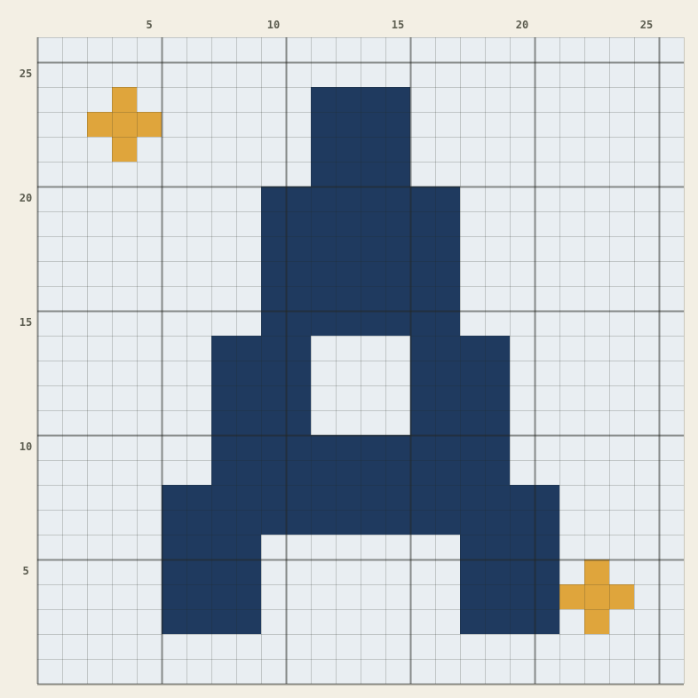
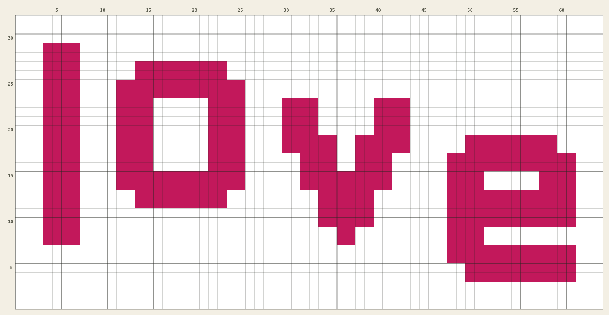

도트뜨개로 만든 도안이에요. 이 도안 열어서 고쳐보기를 누르면 도안 만들기에서 바로 열려서, 색이나 글자를 바꿔 내 도안으로 만들 수 있어요.
처음 태피스트리 크로셰를 연습하기 좋은 20코 짜리 하트. 두 가지 색만 써요.

내 이름 첫 글자를 넣은 도안. 갈무리11 굵게 폰트를 2배로 키웠어요.
한글 도트 폰트로 만든 글씨 도안. 반짝이와 점선을 붙여 심심하지 않게 했어요.

글자 흐름 "물결"로 글자가 살짝 출렁이게 만든 문구 도안이에요.
어두운 배경에 달과 별, 반짝이를 흩뿌린 도안.
튤립 세 송이와 물결선 테두리. 복사·붙여넣기로 줄을 이어 만든 예시예요.
산타, 선물 상자, 반짝이와 두 줄 문구 "Merry Christmas"가 들어 있어요.